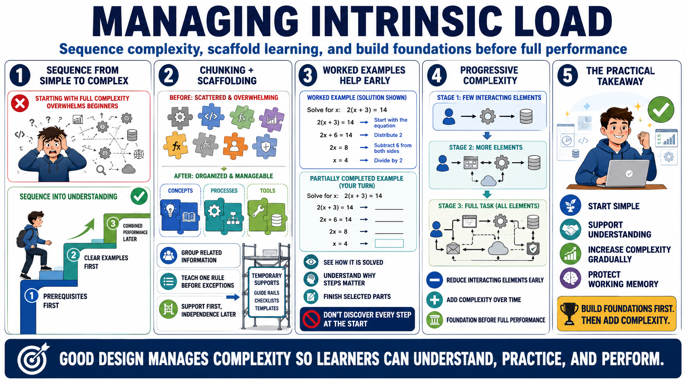

Managing Intrinsic Load
Connecting to LMS... Progress: in progress

Narration
Managing intrinsic load begins with sequencing. Learners usually benefit from moving from simple to complex, from prerequisite knowledge to combined performance, and from clear examples to more varied cases. When instruction begins with the full complexity of a task, beginners may not know which elements matter or how the parts relate. Sequencing gives them a path into the domain.
Chunking and scaffolding help learners handle complexity. A chunk groups related information into a meaningful unit. A scaffold provides temporary support while the learner builds capability. In practice, this might mean teaching one decision rule before combining it with exceptions, showing one data flow before introducing multiple systems, or giving learners a checklist before expecting fluent independent performance.
Worked examples and partially completed examples are especially useful early. They reduce the need for learners to discover every step while they are still forming the basic schema. A worked example shows how a task is solved and why the steps matter. A partially completed example asks learners to finish selected parts, which shifts some responsibility to them without dropping all support at once.
Progressive complexity is the key. Reduce the number of interacting elements early, then add more as learners gain structure. This does not mean hiding reality forever. It means building foundations before expecting full independent performance. When learners have a stable starting model, later complexity becomes easier to place and less likely to overwhelm working memory.